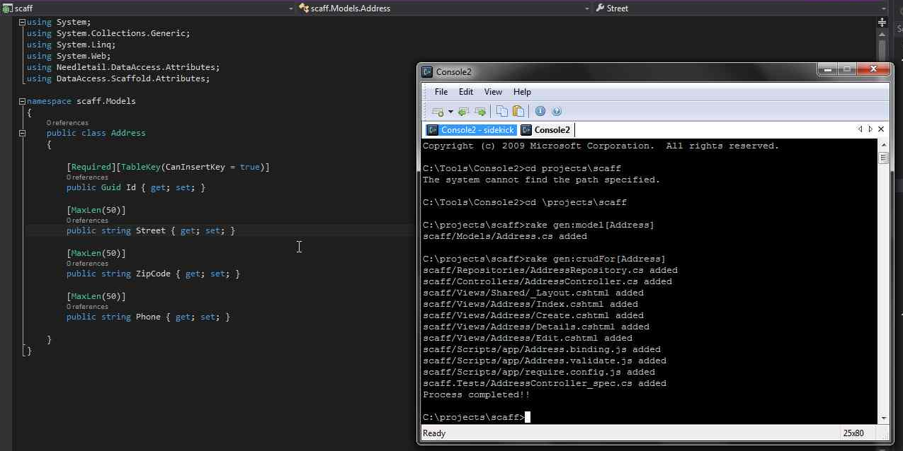
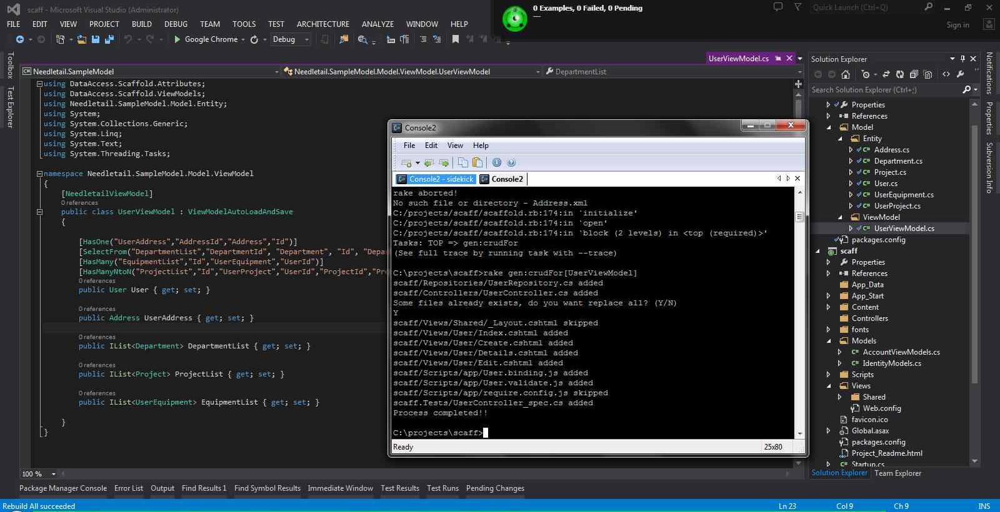

Documentation
It's very importanxt that you understand the libraries used by Scio Framework
otherwise you will only see the framework in action but you will not be
able to modify the generated code or the templates to suit your needs,
so please visit the
prerequisites page and follow the links in that page.
A little background.
The framework takes a solution template as an starting point for your
application, it's also required that you already have a database schema
defined, by convention the name of your new application should match the
name of the database, if you don't want it that way, you can modify all
the conection strings.
All other similar frameworks forces you to have your model in the same
project that your website, with Scio Framework you can have a separated
proyect with all your entities.
Another things that makes Scio framework different, is the it can generate
code automatically for N:N and 1:N relationships without any problems and
lets you define how those relationships occur in the database.
Where to start
Before you begin, be sure to have all the pre requisites installed.
This is the database that we are going to use for our tutorial:
Open a command prompt and navigate to the folder where your solution is
going to be located and run the following command
warmup https://github.com/pedro-ramirez-suarez/MVCScaffold scaff
In this case "scaff" is the name of your solution, remember that by default
the application is going to look for a database named
scaff, a folder with the same name was created and contains everything
that you need to start building your application.
Type the following commands in the DOS shell:
cd scaff
start scaff.sln
rake
rake server
sidekick
Open a second command promopt and navigate to the folder where your solution is located so you can start scaffolding your app. Type the following to generate the model for the Address table:
rake gen:model[Address]
An Address class will be added to your web project, and your project has been automatically built, the next step is to generate some repositories, controllers and UI, type the following in the command line:
rake gen:crudFor[Address]
You will see something like this:

Once you see that growl shows that all the unit tests have passed, you
can navigate to http://localhost:3000/address

You can repeat the process for all the tables in the database, or you
can download a sample project with all the entities and a script to create the tables here.
Our sample project has some minor changes and a view model for users.
If you have all your entities in a separated project, don't forget to
add the reference to the web application and the test project, rebuild
your solution after you have added the reference.
As you can see, the UserViewModel class has some interesting attributes
that have been added to the User property, those attributes reflect how
the data is related in the database and also how we want to show that in
the UI, for more information about the attributes please check the Needletail.DataAccess
documentation.
ViewModels classes must be decorated with the
NeedletailViewModelif you want to generate code for them, also
you will be able to take advantage of some Nedletail built in functionality
like Load and Save.
To generate code for view models, it's exactly the same as for normal
entities, type the following in the console:
rake gen:crudFor[UserViewModel]
You will see something like this:

Wait for growl to show that all tests have pass, you can navigate now
to
http://localhost:3000/userto see your application in action
Note how in this screen data from different tables is displayed, all the data is loaded and saved automatically.
Your code
Use Scio Framework as an starting point, we encourage you to modify the
code and the templates to suit your needs. The templates used to generate
everything are located under the
Templatesfolder in the same folder that contains your solution.